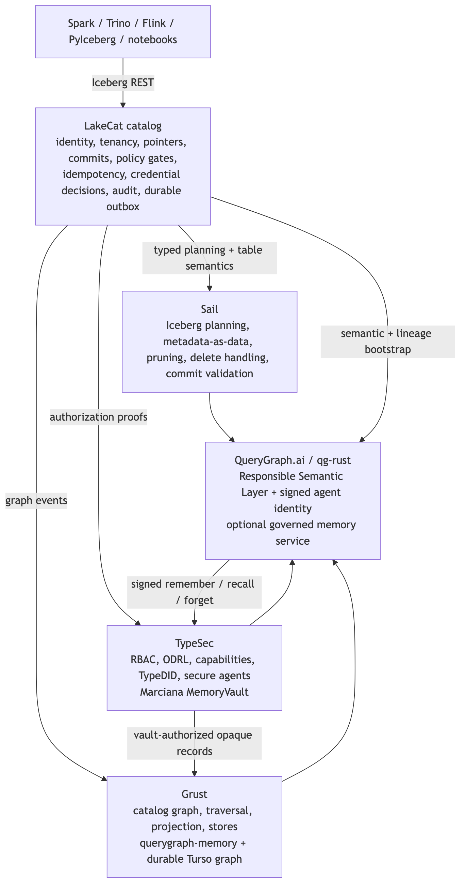

Chapter 4 named the four sibling repositories. This chapter shows how LakeCat talks to each — what it hands off, and what it deliberately refuses to own.
Catalog events naturally form a graph: a server contains projects, a project contains warehouses, a warehouse contains namespaces and credential-rooted storage profiles, a namespace contains tables, and a table has columns, snapshots, commits, policies, scan plans, principals, and lineage runs. QueryGraph wants that graph — but LakeCat must not become a graph database.
LakeCat emits a bounded envelope of stable catalog facts through a catalog-facing sink; Grust owns the taxonomy, stores, traversal, and Cypher:
Server CONTAINS Project Warehouse HAS_STORAGE_PROFILE StorageProfile
Project CONTAINS Warehouse Table GOVERNED_BY Policy
Warehouse CONTAINS Namespace Principal CAN_PLAN ScanPlan
Namespace CONTAINS Table Commit DERIVED_FROM Snapshot
Table HAS_COLUMN Column LineageRun USED_BY QueryGraphModelHigh-cardinality file and manifest facts stay queryable through
Sail’s metadata-as-data rather than being smuggled into the event sink.
Storage-profile and credential-vend events replay with redacted evidence
only — secret-ref-present, the provider, never the secret
URI — so QueryGraph can see that a principal attempted
credential-root access without seeing the credential. The
grust-turso-local feature proves the boundary end to end:
LakeCat writes catalog events into a Grust-owned Turso graph store and
Grust Cypher reads them back, with LakeCat never parsing Cypher or
executing traversal. Ocelot consumes the published Grust 0.12.0,
Lobster crates for both the graph API and Turso backend; the
feature name describes LakeCat’s in-process integration row, not a path
checkout.
LakeCat is a policy enforcement point, not the author of security semantics. Every externally meaningful action — config reads; namespace and table lifecycle; scan planning; commit; credential vending; policy management; graph and lineage reads — passes through TypeSec. LakeCat gathers context (principal and agent DID, bearer subject, warehouse/namespace/table, columns, snapshot, requested credential duration, purpose, active bindings), asks TypeSec for a decision, persists the receipt with audit-safe hashes, and applies the restriction before Sail plans.
This is where ODRL becomes operational. A policy may say a principal reads only certain columns, only for a purpose, or only under a row predicate. LakeCat parses the minimal enforceable subset — accepting camel-case, kebab-case, and JSON-LD operand forms — and fails closed: missing or deny-shaped operators, blank allowed-column lists, blank purposes, or disagreeing purpose sources are rejected rather than guessed. Composition and reasoning stay in TypeSec; LakeCat does not grow a parallel security language.
Credential vending is the audited exception, not the default.
Governed Sail-planned reads are the norm. When credentials must issue,
TypeSec checks the credentials.issue capability for the
exact secret reference and LakeCat returns only scoped, short-lived
configuration — capping TTL to the tightest
max-credential-ttl-seconds across all policy locations,
replacing any issuer-supplied lakecat.* evidence with
catalog-derived values, and recording only hashed prefixes in audit. The
replay-admission rules from Chapter 5 (matching top-level and receipt
restrictions, full digests, closed field sets) apply identically here,
so a credential or raw-exception event cannot drift before it reaches
graph, lineage, or QGLake proof.
Ocelot consumes published TypeSec 0.12.0, Torcello. LakeCat owns the enforcement point and durable receipt binding; TypeSec owns authorization, capability, and receipt semantics.
TypeSec now also owns the completed Marciana v1 security boundary for
governed agent memory. A MemoryVault requires
operation-specific capabilities for remember, recall, and forget;
applies purpose and clearance policy before rehydrating content; and
preserves labels, quarantine, temporal history, and audit. Grust’s
querygraph-memory adapter owns the opaque record and entity
graph on durable Turso/libSQL storage. At the service edge, qg-rust
verifies the signed TypeDID envelope and uses its signing
did:key—not a caller-supplied body field—as the TypeSec
policy subject.
That memory is not LakeCat’s MemoryCatalogStore. The
latter is an operational implementation of CatalogStore for
tests and embedded use, interchangeable with LakeCat’s durable Turso
catalog store. It holds namespaces, tables, views, policies, receipts,
idempotency state, and outbox events; it is not an agent recall system.
LakeCat contributes governed catalog and lineage evidence that a
QueryGraph application may later choose to remember. It does not mint
Marciana capabilities, store Marciana records, or reveal recalled
content.
Sail is a Rust-native engine — Arrow, DataFusion, generated Iceberg REST models, catalog-provider seams, manifest pruning, metadata-as-data — so LakeCat can ask for typed Iceberg behavior instead of parsing just enough JSON to survive. The questions LakeCat sends to Sail are the ones that require table-format knowledge:
For Ocelot, the Sail crates report version 0.6.4 and
resolve from the lakecat branch of
github.com/querygraph/sail. Cargo.lock pins
that branch to revision
dbff52b0dfff5fed302d09a72eeb7feb92f50725. The branch is
explicit release provenance: it carries the Iceberg planning,
snapshot-append, Foyer cache, and measured SQL/Iceberg hot-path work
LakeCat needs until those APIs can move to an upstream or published Sail
line. The reusable cache and hot-path changes are proposed to LakeSail
in lakehq/sail#2400;
QueryGraph’s cache implementation is aligned with that reviewed source
while retaining LakeCat-only provider and commit seams.
LakeCat evolves under three rules: conform to Iceberg v3 for ordinary
clients; preserve unknown/emerging v4 metadata without claiming settled
semantics; prefer typed Sail support the moment it exists, using JSON
passthrough only as a bridge. Today the v4 bridge is deliberately narrow
— when LakeCat sees format-version: 4,
lakecat-sail extracts the stable envelope (table UUID,
location, schema id, snapshot id, sequence number, manifest-list path,
default spec, field names), can plan a governed manifest-list scan task
from it, and re-validates the signed plan task on
fetchScanTasks so a stateless fetch can neither drift to a
different manifest list nor widen the governed projection. Pruning and
typed metadata-tree semantics wait for Sail-owned v4 support.
The handoff between LakeCat and Sail should therefore be compact and typed:
| Work item | LakeCat responsibility | Sail responsibility | Durable proof LakeCat should keep |
|---|---|---|---|
| Table load | Resolve warehouse, namespace, table, principal, and current metadata pointer. | Interpret table metadata and expose table status using reusable Iceberg types. | Table identity, pointer hash, format version, principal, and receipt/action context. |
| Governed scan | Ask TypeSec for the effective restriction and bind it to the request. | Bind projection and predicates to field ids, prune manifests and files, attach deletes, and produce scan tasks. | Requested and effective projection hashes, predicate hash, snapshot, task count, delete posture, plan hash, and receipt hash. |
| Fetch scan task | Check that a stateless task fetch belongs to the prior governed plan. | Reapply task interpretation without widening the plan. | Prior plan hash, task token hash, effective stats-field evidence, and receipt hash. |
| Commit | Own CAS, idempotency, pointer-log, audit, and outbox state. | Validate table metadata, commit requirements, format-version behavior, and future v4 typed semantics. | Expected and new pointer hashes, format version, snapshot evidence, idempotency hash, audit id, and outbox id. |
| Metadata-as-data | Authorize the request and record who asked. | Expose snapshots, manifests, files, deletes, partitions, and history as engine-shaped metadata views. | Metadata view name, pointer hash, result-shape hash, principal, and receipt hash. |
QueryGraph needs a semantic picture, not just physical access.
LakeCat publishes one without pretending to be QueryGraph. The bootstrap
bundle carries Semantic Croissant and CDIF projections (dataset/field
discovery), an OSI handoff of stable anchors, ODRL artifacts and TypeSec
policy context, OpenLineage events for catalog changes and plans, a
Grust-ready graph envelope, and a manifest that hashes every artifact.
The boundary is careful: LakeCat publishes stable anchors and governed
source metadata; QueryGraph authors the business model. Because
OpenLineage events drain from the durable outbox in
created_at,event_id order after the catalog
transaction, lineage reflects committed state rather than a handler’s
best-effort side effect.
When LakeCat is done, a standard engine still loads and commits tables without knowing QueryGraph exists, while governed callers get the richer path:

The release uses one coordinated substrate wave. The manifest expresses desired versions and sources; the lockfile records the exact build:
| Component | Ocelot baseline | Relationship to LakeCat |
|---|---|---|
| LakeCat workspace | 0.3.0, Ocelot |
All LakeCat crates and qglake-bundle share the
workspace version. |
| Grust | 0.12.0, Lobster, crates.io |
grust-graph and grust-turso provide graph
projection, Cypher, and the durable Turso graph backend. |
| TypeSec | 0.12.0, Torcello, crates.io |
The typesec facade provides the authorization and
receipt boundary used by lakecat-security. |
| Sail | 0.6.4, git branch querygraph/sail#lakecat,
locked at dbff52b0 |
Sail supplies Iceberg planning, model, commit-update, finalized
object-store-cache behavior, and measured SQL/Iceberg hot paths not yet
consumed from a published release; reusable work is proposed upstream in
lakehq/sail#2400. |
| QueryGraph | 0.4.0, Sentinel |
Acceptance peer rather than a compiled LakeCat dependency; its
importer consumes LakeCat qglake-bundle and
lakecat-core 0.3.0 while the handoff gate
drives verify/import under --locked. |
This distinction matters operationally. Updating a version in prose
is not a dependency upgrade. Ocelot’s reproducible statement is the
combination of Cargo.toml, Cargo.lock, the
local dependency contract, and the locked QueryGraph handoff.
The workspace expresses the architecture directly:
crates/
lakecat-core stable IDs, errors, time, config, content hashes
lakecat-api Iceberg REST request/response adapters
lakecat-store catalog state traits + Turso-backed implementation
lakecat-sail Sail provider bridge and privileged planning client
lakecat-graph catalog-facing Grust sink/adapters
lakecat-security TypeSec integration and authorization receipts
lakecat-lineage OpenLineage projection and event receipts
lakecat-querygraph Croissant/CDIF/OSI/ODRL/OpenLineage bootstrap projection
qglake-bundle portable bootstrap wire types, hashes, and validators
lakecat-service axum service, middleware, auth, routing
lakecat-cli admin, local demo, conformance, bootstrap exportFeature gates keep integrations honest, and embedded defaults stay safe for tests so a memory-store test never accidentally depends on a sibling repo:
sail-local in-process Sail APIs for planning and provider integration
typesec-local in-process TypeSec APIs for governance and TypeDID verification
grust-local in-process Grust APIs for catalog graph projection
grust-turso-local Grust's Turso backend for durable catalog graph projection
turso-local the Turso-backed durable storeThe runtime honors the same line: without sail-local,
the deferred Sail seam rejects scan planning rather than
fabricating an empty plan, so any real read reflects the engine that
interprets Iceberg metadata, never a catalog-shaped placeholder.
Standard compatibility lives at /catalog/v1; management
APIs, /querygraph/v1/bootstrap, and feature-gated Sail
planning sit beside it, never in front of it. (The Ocelot-era release
gate and dependency contract that hold this together are covered in the
release chapter.)